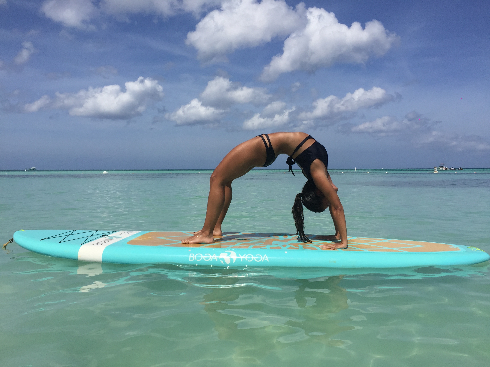

<section class="about-me">
  <div class="about-me-paragraph">
    <div class="about-me-paragraph-item">My name is Sabrina Peña, I'm 24
      years old and I'm from Caracas, Venezuela. I have been practicing yoga for more than
    6 years now, and on October 2018 I decided to get a certificate as a yoga teacher.</div>
    <div class="about-me-paragraph-item">Yoga is my passion. Since I started practicing, I've never
    stopped. I love the way it makes me feel, and that it's more than just a phisical exercise. When
  I'm in the mat, I try to be 100% present and tune in into that moment, into my body, into my mind.
  And after years of practice, I've dedicated my time to learning how to have that same attitude towards life,
  how to practice yoga and meditation outside of the matt.</div>
    <div class="about-me-paragraph-item">I also love nature, and that's the reason why I love running and hiking
  too. I'm learning to code, which is why I decided to do this website in the first place.</div>
</div>
  

</section>
